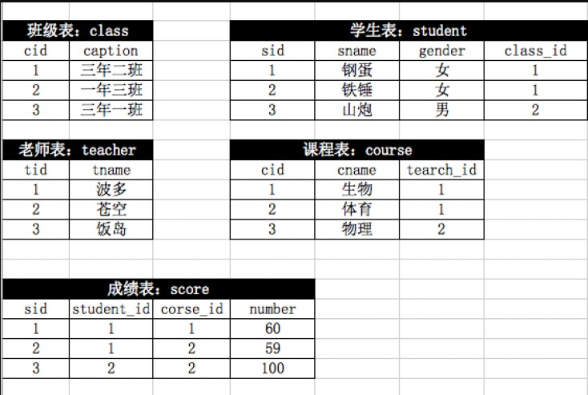

query_practice
查询练习 -_-¶
注意sql语句的美化... (´▽｀) 头发没了 :-)

数据的准备¶
create database egon default charset utf8 collate utf8_general_ci;
use egon;
create table class(
cid int auto_increment primary key,
caption varchar(16) not null
);
create table teacher(
tid int auto_increment primary key,
tname varchar(16) not null
);
create table student(
sid int auto_increment primary key,
-- sex enum('male','female') not null default 'male',
gender enum('男','女') not null,
class_id int not null,
sname varchar(16) not null,
constraint fk_student_class
foreign key(class_id) references class(cid)
on delete cascade
on update cascade
);
create table course(
cid int auto_increment primary key,
cname varchar(16),
teacher_id int not null,
constraint fk_course_teacher
foreign key(teacher_id) references teacher(tid)
on delete cascade
on update cascade
);
create table score(
sid int auto_increment primary key,
student_id int not null,
course_id int not null,
num int not null,
constraint fk_score_student
foreign key(student_id) references student(sid)
on delete cascade
on update cascade,
constraint fk_score_course
foreign key(course_id) references course(cid)
on delete cascade
on update cascade
);
INSERT INTO class VALUES ('1', '三年二班'), ('2', '三年三班'), ('3', '一年二班'), ('4', '二年九班');
INSERT INTO `teacher` VALUES ('1', '张磊老师'), ('2', '李平老师'), ('3', '刘海燕老师'), ('4', '朱云海老师'), ('5', '李杰老师');
INSERT INTO student VALUES ('1', '男', '1', '理解'), ('2', '女', '1', '钢蛋'), ('3', '男', '1', '张三'), ('4', '男', '1', '张一'), ('5', '女', '1', '张二'), ('6', '男', '1', '张四'), ('7', '女', '2', '铁锤'), ('8', '男', '2', '李三'), ('9', '男', '2', '李一'), ('10', '女', '2', '李二'), ('11', '男', '2', '李四'), ('12', '女', '3', '如花'), ('13', '男', '3', '刘三'), ('14', '男', '3', '刘一'), ('15', '女', '3', '刘二'), ('16', '男', '3', '刘四');
INSERT INTO `course` VALUES ('1', '生物', '1'), ('2', '物理', '2'), ('3', '体育', '3'), ('4', '美术', '2');
INSERT INTO `score` VALUES ('1', '1', '1', '10'), ('2', '1', '2', '9'), ('5', '1', '4', '66'), ('6', '2', '1', '8'), ('8', '2', '3', '68'), ('9', '2', '4', '99'), ('10', '3', '1', '77'), ('11', '3', '2', '66'), ('12', '3', '3', '87'), ('13', '3', '4', '99'), ('14', '4', '1', '79'), ('15', '4', '2', '11'), ('16', '4', '3', '67'), ('17', '4', '4', '100'), ('18', '5', '1', '79'), ('19', '5', '2', '11'), ('20', '5', '3', '67'), ('21', '5', '4', '100'), ('22', '6', '1', '9'), ('23', '6', '2', '100'), ('24', '6', '3', '67'), ('25', '6', '4', '100'), ('26', '7', '1', '9'), ('27', '7', '2', '100'), ('28', '7', '3', '67'), ('29', '7', '4', '88'), ('30', '8', '1', '9'), ('31', '8', '2', '100'), ('32', '8', '3', '67'), ('33', '8', '4', '88'), ('34', '9', '1', '91'), ('35', '9', '2', '88'), ('36', '9', '3', '67'), ('37', '9', '4', '22'), ('38', '10', '1', '90'), ('39', '10', '2', '77'), ('40', '10', '3', '43'), ('41', '10', '4', '87'), ('42', '11', '1', '90'), ('43', '11', '2', '77'), ('44', '11', '3', '43'), ('45', '11', '4', '87'), ('46', '12', '1', '90'), ('47', '12', '2', '77'), ('48', '12', '3', '43'), ('49', '12', '4', '87'), ('52', '13', '3', '87');
练习题¶
1、查询所有的课程的名称以及对应的任课老师姓名
2、查询学生表中男女生各有多少人
3、查询物理成绩等于100的学生的姓名
-- 物理 成绩 学生姓名 <凭感觉往有外键的表开始思考>
-- 先找到物理成绩等于100的学生的id
select student_id from score
inner join course on course.cid = score.course_id
where cname = '物理' and num = 100;
select sname from score
inner join course on course.cid = score.course_id
inner join student on student.sid = score.student_id
where cname = '物理' and num = 100;
select sname from student
where sid in
(select student_id from score
inner join course on course.cid = score.course_id
where cname = '物理' and num = 100);
4、查询平均成绩大于八十分的同学的姓名和平均成绩
select student_id,avg(num) from score group by student_id having avg(num) > 80;
select sname,avg_score from student inner join
(select student_id,avg(num) as avg_score from score group by student_id having avg(num) > 80) as t2
on student.sid = t2.student_id;
5、查询所有学生的学号，姓名，选课数，总成绩
-- 只是选修了课程的学生 inner join
-- 注意:所有学生应该包括未选修课程的 left join
select sid,sname,course_num,total_num from student
left join
(select student_id,count(1) as course_num,sum(num) as total_num from score group by student_id) as t
on student.sid = t.student_id;
6、 查询姓李老师的个数
7、 查询没有报李平老师课的学生姓名
-- 李平老师教了哪些课
select cid from course inner join teacher on course.teacher_id = teacher.tid
where tname = '李平老师';
-- 哪些学生选了李平老师的课
select distinct student_id from score where course_id in
(select cid from course inner join teacher on course.teacher_id = teacher.tid
where tname = '李平老师');
-- 取反就是没选的学生名单
select sname from student where sid not in
(select distinct student_id from score where course_id in
(select cid from course inner join teacher on course.teacher_id = teacher.tid
where tname = '李平老师'));
8、 查询物理课程比生物课程高的学生的学号
-- 思路:分别得到物理成绩表与生物成绩表,然后连表
select t1.student_id from
(select student_id,num from score where course_id =
(select cid from course where cname = '物理')) as t1
inner join
(select student_id,num from score where course_id =
(select cid from course where cname = '生物')) as t2
on t1.student_id = t2.student_id
where t1.num > t2.num;
-- 思路:
-- 连表查询 筛选出选了生物或物理科目的记录 在虚拟表最后面添加了两列
-- 若此行数据的cname是'生物'就赋值为生物成绩 否则 为-1 同理'物理'一样
-- 类似于这样 ==> 便于分组后的聚合函数操作
+-----+------------+-----------+-----+-----+--------+------------+----+----+
| sid | student_id | course_id | num | cid | cname | teacher_id | sw | wl |
+-----+------------+-----------+-----+-----+--------+------------+----+----+
| 1 | 1 | 1 | 10 | 1 | 生物 | 1 | 10 | -1 |
| 2 | 1 | 2 | 9 | 2 | 物理 | 2 | -1 | 9 |
+-----+------------+-----------+-----+-----+--------+------------+----+----+
SELECT
*,
case cname WHEN "生物" then num else -1 end sw,
case cname WHEN "物理" then num else -1 end wl
FROM
score
inner JOIN course ON score.course_id = course.cid
where
cname in ("生物","物理") and student_id = 1;
---
SELECT
student_id,
max(case cname WHEN "生物" then num else -1 end) as sw,
max(case cname WHEN "物理" then num else -1 end) as wl
FROM
score
inner JOIN course ON score.course_id = course.cid
where
cname in ("生物","物理")
GROUP BY
student_id
HAVING
wl > sw and sw != -1 and wl != -1; -- 加不等于是因为可能学生只选择了生物物理其中一门课
9、 查询没有同时选修物理课程和体育课程的学生姓名
-- 题目意思是查询物理和体育两门课只选修了其中一门的学生
select student_id from score inner join course on score.course_id = course.cid
where cname in ('物理','体育') group by student_id having count(1) < 2;
select sname from student where sid in
(select student_id from score inner join course on score.course_id = course.cid
where cname in ('物理','体育') group by student_id having count(1) < 2);
10、查询挂科超过两门(包括两门)的学生姓名和班级
select student_id from score where num < 60 group by student_id having count(1) >= 2;
select sname,caption from student inner join class on student.class_id = class.cid
where sid in
(select student_id from score where num < 60 group by student_id having count(1) >= 2);
11 、查询选修了所有课程的学生姓名
-- 统计课程数
select count(1) from course;
-- 基于score表按照student_id分组,统计课程数据等于课程总数
select student_id from score group by student_id
having count(1) = (select count(1) from course);
select sname from student where sid in
(select student_id from score group by student_id
having count(1) = (select count(1) from course));
12、查询李平老师教的课程的所有成绩记录
-- 李平老师教了哪些课
select cid from course inner join teacher on course.teacher_id = teacher.tid
where tname = '李平老师';
select * from score where course_id in
(select cid from course inner join teacher on course.teacher_id = teacher.tid
where tname = '李平老师');
13、查询全部学生都选修了的课程号和课程名
-- 思路: 取所有学生数,然后基于score表的课程分组,找出count(student_id)等于学生数
select count(1) from student;
select course_id from score group by course_id
having count(1) = (select count(1) from student)
select cid,cname from course where cid in
(
select course_id from score group by course_id
having count(1) = (select count(1) from student)
);
14、查询每门课程被选修的次数
15、查询只选修了一门课程的学生姓名和学号
select student_id from score group by student_id having count(1) = 1;
select sid,sname from student where sid in
(select student_id from score group by student_id having count(1) = 1);
16、查询所有学生考出的成绩并按从高到低排序（成绩去重）
17、查询平均成绩大于85的学生姓名和平均成绩
select student_id,avg(num) from score group by student_id having avg(num)>85;
select sname,avg_num from student inner join
(
select student_id,avg(num) as avg_num from score group by student_id having avg(num)>85
) as t2
on student.sid = t2.student_id;
18、查询生物成绩不及格的学生姓名和对应生物分数
select cid from course where cname = '生物';
select student_id,num from score
where course_id = (select cid from course where cname = '生物') and num < 60
select sname,num from student inner join
(
select student_id,num from score
where course_id = (select cid from course where cname = '生物') and num < 60
)as t2
on student.sid = t2.student_id;
-- 思路: 无情连表
SELECT
sname 姓名,
num 生物成绩
FROM
score
LEFT JOIN course ON score.course_id = course.cid
LEFT JOIN student ON score.student_id = student.sid
WHERE
course.cname = '生物'
AND score.num < 60;
19、查询在所有选修了李平老师课程的学生中，这些课程(李平老师的课程，不是所有课程)平均成绩最高的学生姓名
select cid from course inner join teacher on course.teacher_id = teacher.tid
where tname = '李平老师';
-- 这里sid in ()用in 会报错！莫名其妙...
-- This version of MySQL doesn't yet support 'LIMIT & IN/ALL/ANY/SOME subquery'
select sname from student where sid =
(
select student_id from score where course_id in
(
select cid from course inner join teacher
on course.teacher_id = teacher.tid where tname = '李平老师'
)
group by student_id
order by avg(num) desc
limit 1
);
-- 万一有并列的情况呢？？喂不是很严谨啊！
-- 严谨起来了..舒服了 但是总感觉哪里不对...
-- 虽然说 group by分组后只能去到分组字段和聚合函数结果
-- 但这里有连表 可以取到student_id外键对应的那张表的一条记录
select sname,avg(num) from score
inner join course on score.course_id = course.cid
inner join student on score.student_id = student.sid
inner join teacher on course.teacher_id = teacher.tid
where tname = '李平老师'
group by student_id
having avg(num) = # 就是这 子查询里用了limit关键字 这里就不能用in
(
select avg(num) from score
inner join course on score.course_id = course.cid
inner join teacher on course.teacher_id = teacher.tid
where tname = '李平老师'
group by student_id
order by avg(num) desc
limit 1
);
20、查询每门课程成绩最好的前两名学生姓名 哇！:-I
-- 查看每门课程按照分数排序的信息
select * from score order by course_id,num desc;
-- 求出每门课程的课程course_id,与最高分数first_num
select course_id,max(num) as first_num from score group by course_id;
-- 去掉最高分,再按照课程分组,取得的最高分,就是第二高的分数second_num
-- score inner join 虚拟表t 在每个课程后面都会跟上本课程最高的成绩
select score.course_id,max(num) as second_num from score inner join
(select course_id,max(num) as first_num from score group by course_id) as t
on score.course_id = t.course_id
where score.num < first_num -- 剔除最高分
group by course_id;
-- 将有最高成绩的表和第二高成绩的表进行连表
select
t1.course_id,
t1.first_num,
t2.second_num
from
(select course_id,max(num) as first_num from score group by course_id) as t1
inner join
(
select score.course_id,max(num) as second_num from score inner join
(select course_id,max(num) as first_num from score group by course_id) as t
on score.course_id = t.course_id
where score.num < first_num -- 剔除最高分
group by course_id
) as t2
on t1.course_id = t2.course_id;
-- 查询前两名的学生（有可能出现并列第一或者并列第二的情况）只要它的成绩大于等于第二的成绩就行
-- 将上一回合的查询结果得到的虚拟表设置别名为t3
select
score.student_id,
t3.course_id,
t3.first_num,
t3.second_num
from
score
inner join
(
select
t1.course_id,
t1.first_num,
t2.second_num
from
(select course_id,max(num) as first_num from score group by course_id) as t1
inner join
(
select score.course_id,max(num) as second_num from score inner join
(select course_id,max(num) as first_num from score group by course_id) as t
on score.course_id = t.course_id
where score.num < first_num -- 剔除最高分
group by course_id
) as t2
on t1.course_id = t2.course_id
)as t3
on score.course_id = t3.course_id
where score.num >= t3.second_num
order by course_id;
-- 个人觉得这种方式不可取 太复杂了... 若取每门课前三名学生 且不得又嵌套一层...
/* 查询每门课程成绩最好的前3名 (不考虑成绩并列情况) */
SELECT
cid,
cname,
-- where course_id = course.cid order by num
( select student.sname from score left join student on student.sid = score.student_id where course_id = course.cid order by num desc limit 1 offset 0) as "第1名",
( select student.sname from score left join student on student.sid = score.student_id where course_id = course.cid order by num desc limit 1 offset 1) as "第2名",
( select student.sname from score left join student on student.sid = score.student_id where course_id = course.cid order by num desc limit 1 offset 2) as "第3名"
FROM
course;
/* 查询每门课程成绩最好的前3名 (考虑成绩并列情况) */
-- 查询到每门课的前三高分
SELECT
cid,
cname,
-- course_id = course.cid 保证了是某一科目
-- group by num 是对成绩去重了 去重后再排序
( select num from score where course_id = course.cid GROUP BY num order by num desc limit 1 offset 0) as "最高分",
( select num from score where course_id = course.cid GROUP BY num order by num desc limit 1 offset 1) as "第二高分",
( select num from score where course_id = course.cid GROUP BY num order by num desc limit 1 offset 2) as "第三高分"
FROM
course;
-- I'm dead.
select
score.course_id,
C.cname,
sname,
num
from score
inner join student on score.student_id = student.sid
inner join
(
SELECT
cid,
cname,
( select num from score where course_id = course.cid GROUP BY num order by num desc limit 1 offset 0) as first,
( select num from score where course_id = course.cid GROUP BY num order by num desc limit 1 offset 1) as second,
( select num from score where course_id = course.cid GROUP BY num order by num desc limit 1 offset 2) as third
FROM course
) as C
on score.course_id = C.cid -- 联表后score表的每一条数据后面都会跟着 对应科目第一第二第三的高分
WHERE score.num >= C.third -- 删除掉低于第三分数的score表记录 剩下的记录就都是前三的
order by score.course_id,num;
21、查询不同课程但成绩相同的学生学号，课程号，成绩
-- 万万没想到 使用交叉连接！！
select DISTINCT
s1.student_id,s1.course_id,s2.course_id,s1.num,s2.num
from
score as s1, score as s2
where
s1.num = s2.num and s1.course_id != s2.course_id
order by s1.student_id;
22、查询没学过“叶平”老师课程的学生姓名以及选修的课程名称
-- 李平老师教过的课程id.
select cid from course left join teacher
on course.teacher_id = teacher.tid where tname = '李平老师';
-- 选过李平老师课程的学生
select distinct student_id from score where score.course_id in
(
select cid from course left join teacher
on course.teacher_id = teacher.tid where tname = '李平老师'
);
-- 没选过李平课程老师的学生
select * from student where sid not in
(
select distinct student_id from score where score.course_id in
(
select cid from course left join teacher
on course.teacher_id = teacher.tid where tname = '李平老师'
)
);
-- 与score关联起来
select t.sname,course_id from score inner join
(
select sid,sname from student where sid not in
(
select distinct student_id from score where score.course_id in
(
select cid from course left join teacher
on course.teacher_id = teacher.tid where tname = '李平老师'
)
)
)as t
on score.student_id = t.sid;
select t.sname,course.cname from score inner join
(
select sid,sname from student where sid not in
(
select distinct student_id from score where score.course_id in
(
select cid from course left join teacher
on course.teacher_id = teacher.tid where tname = '李平老师'
)
)
)as t
on score.student_id = t.sid
inner join course on score.course_id = course.cid;
23、查询所有选修了学号为1的同学选修过的一门或者多门课程的同学学号和姓名
-- 学号为1的同学选修的课程id集合
select course_id from score where student_id = 1;
select student_id from score where course_id in -- 筛选出在此集合中的score记录
(select course_id from score where student_id = 1)
group by student_id -- 分组
having count(1) >= 1; -- 看数量
24、任课最多的老师中学生单科成绩最高的学生姓名
```sql -- 查询任课数最多的老师的信息 select tid,tname from course inner join teacher on course.teacher_id = teacher.tid group by tid order by count(1) desc limit 1;
-- 任课数最多的老师所教的课程信息 -- 用in不行 报错This version of MySQL doesn't yet support 'LIMIT & IN/ALL/ANY/SOME subquery' -- 那就用连表 select cid,cname from course inner join ( select tid from course inner join teacher on course.teacher_id = teacher.tid group by tid order by count(1) desc limit 1 ) as t on course.teacher_id = t.tid;
-- 找出所教课程单科成绩最高的分数 select course_id,max(num) from score where course_id in ( select cid from course inner join ( select tid from course inner join teacher on course.teacher_id = teacher.tid group by tid order by count(1) desc limit 1 ) as t on course.teacher_id = t.tid ) group by course_id;
-- 将score表与上方这一虚拟表进行内连接 -- 则能匹配的课程记录后面会添加课程id和此课程最高分数两个字段 -- 假如我们匹配的课程id 是2,4 这样内连接后 记录中就只会剩下course_id值为2,4的记录 select sname,score.course_id,num from score inner join student on score.student_id = student.sid -- 感觉这个放在后面关联会少关联一些... inner join ( select course_id,max(num) as max_num from score where course_id in ( select cid from course inner join ( select tid from course inner join teacher on course.teacher_id = teacher.tid group by tid order by count(1) desc limit 1 ) as t on course.teacher_id = t.tid ) group by course_id )as t1 on score.course_id = t1.course_id where score.num = max_num; -- 当前科目与当前科目最高成绩相等
```